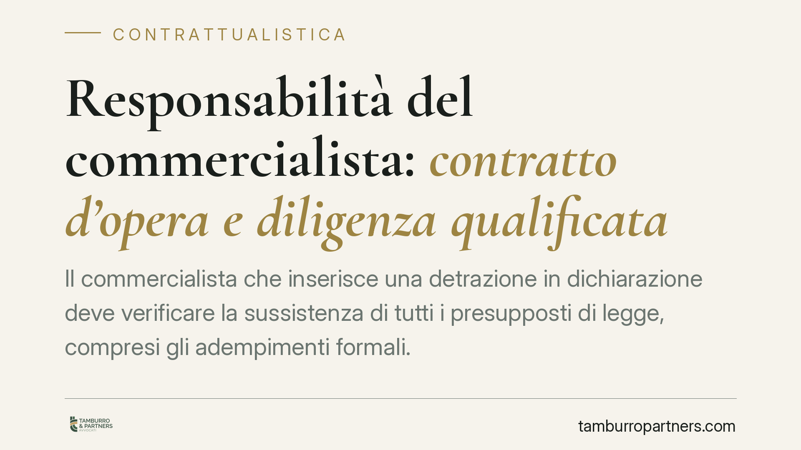

Responsabilità del commercialista: contratto d'opera e diligenza qualificata
Il commercialista che inserisce una detrazione in dichiarazione deve verificare la sussistenza di tutti i presupposti di legge, compresi gli adempimenti formali. La Cassazione ribadisce che la diligenza del professionista si misura sul parametro qualificato dell'art. 1176 c.c. e che, in caso di errore, il contratto d'opera intellettuale espone il professionista alle conseguenze delle sanzioni subite dal cliente.

Il fatto
Un contribuente si vede contestare dall'Agenzia delle Entrate una detrazione fiscale inserita in dichiarazione dal proprio commercialista. La pratica agevolativa sottostante era stata gestita materialmente da un altro professionista (un geometra), ma gli adempimenti formali necessari a fondare il beneficio non risultavano completi. Il contribuente, dopo aver subito le sanzioni, agisce contro il commercialista per il risarcimento.
La questione, benché abbia radice tributaria, si gioca interamente sul piano contrattuale: quali sono gli obblighi del professionista verso il cliente e fin dove arriva il perimetro del suo incarico.
Inquadramento normativo
Il rapporto tra cliente e commercialista è un contratto d'opera intellettuale, disciplinato dagli artt. 2229 e seguenti del codice civile. Il professionista non si obbliga a garantire un risultato, ma a eseguire la prestazione con la diligenza dovuta.
Qui entra in gioco l'art. 1176, comma 2, c.c.: la diligenza richiesta al professionista non è quella del "buon padre di famiglia", ma la diligenza qualificata commisurata alla natura dell'attività esercitata. Significa che al commercialista si richiede la perizia tecnica propria della categoria, inclusa la conoscenza delle condizioni di legge per fruire di un'agevolazione.
Sul versante probatorio opera l'art. 1218 c.c. In caso di inadempimento, è il professionista a dover provare che l'errore dipende da causa a lui non imputabile. Il cliente deve allegare l'inadempimento e il danno; il commercialista deve dimostrare di aver agito con la diligenza dovuta o che l'evento è estraneo alla sua sfera di controllo. L'onere, in altri termini, si inverte a carico del debitore della prestazione.
Va tenuto distinto il piano civilistico da quello sanzionatorio tributario. Ai fini delle sanzioni amministrative tributarie, l'art. 5 del D.Lgs. 472/1997 richiede l'imputabilità soggettiva della violazione a titolo di dolo o colpa: la sanzione colpisce il contribuente, che poi può rivalersi civilmente sul professionista secondo le regole del contratto d'opera. I due regimi non coincidono e vanno valutati separatamente.
Implicazioni pratiche
Il messaggio è netto: chi compila e trasmette la dichiarazione non può limitarsi a trascrivere dati forniti da terzi. La verifica dei presupposti della detrazione, inclusi gli adempimenti formali, rientra nella prestazione tipica del commercialista.
Per il commercialista. La delega materiale della pratica a un altro professionista non neutralizza automaticamente la responsabilità verso il cliente. Chi assume l'incarico di redigere la dichiarazione si fa garante, nei limiti della diligenza qualificata, della coerenza tra i dati inseriti e le condizioni di legge.
Per il contribuente. La possibilità di rivalersi sul professionista esiste, ma presuppone la prova del danno (le sanzioni e gli interessi effettivamente pagati) e un inadempimento riconducibile alla prestazione affidata.
Il nodo del perimetro dell'incarico. La misura della responsabilità dipende da cosa è stato effettivamente affidato al commercialista. Un mandato limitato alla sola trasmissione telematica ha un perimetro diverso da un incarico che include la valutazione dell'agevolazione. La prova del contenuto dell'incarico diventa decisiva, ed è qui che pesa la forma scritta del mandato.
Cosa fare in concreto
- Formalizzare l'incarico per iscritto, delimitando con precisione le attività affidate e quelle escluse, così da rendere opponibile il perimetro della prestazione.
- Documentare le verifiche svolte sui presupposti di detrazioni e crediti: conservare le richieste di documentazione al cliente e le risposte ricevute.
- Non trascrivere passivamente dati elaborati da altri professionisti senza un controllo di coerenza rispetto alle condizioni di legge.
- In caso di contestazione dell'Agenzia, è opportuno valutare tempestivamente i margini difensivi e la ripartizione delle responsabilità prima della scadenza dei termini di impugnazione.
- Conservare tracciabilità delle comunicazioni con il cliente, utile sia a provare la diligenza sia a ricostruire eventuali omissioni informative imputabili al contribuente.
Nota sulla fonte
L'orientamento descritto è riferito dalla fonte giornalistica a un'ordinanza della Cassazione civile. Gli estremi del provvedimento (indicati nella fonte come ord. n. 3215/2026) sono da verificare sulla banca dati ufficiale prima di ogni utilizzo in sede difensiva, trattandosi di dato non ancora riscontrato in via diretta.
---
Contributo informativo a cura di Tamburro & Partners - Avv. Giuseppe Tamburro. Non costituisce parere legale.
Ogni contratto ha il suo equilibrio.
Se vuoi una revisione delle clausole o una redazione su misura, scrivi allo studio. Ti rispondiamo entro un giorno lavorativo.